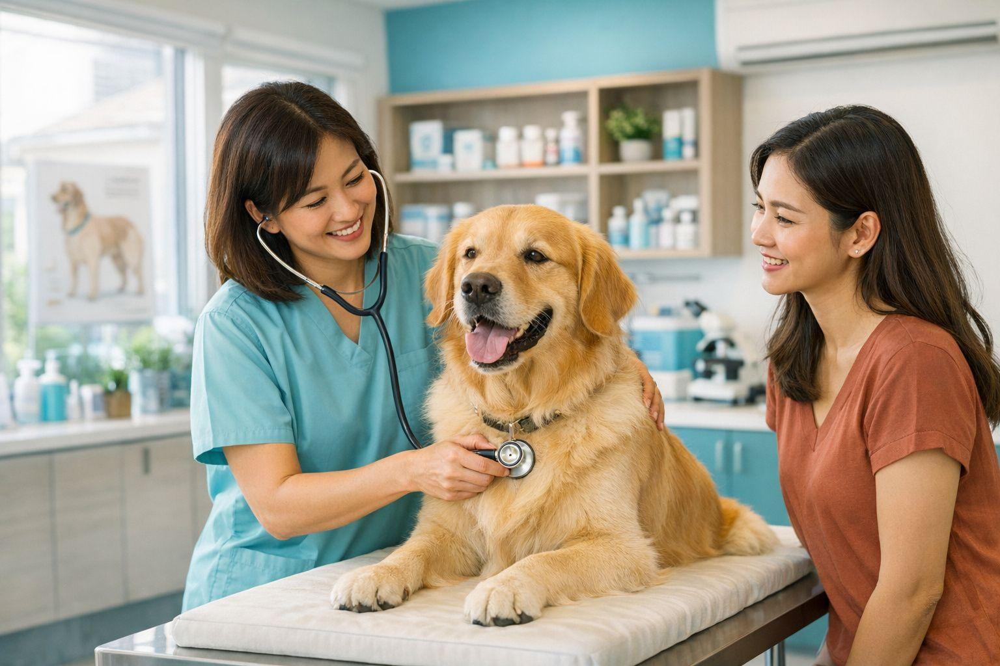

🩺 Consultas
Atendimento veterinário e acompanhamento da saúde.
Cuidando de quem faz parte da sua família!

ATENDIMENTO 24HSomos uma clínica veterinária especializada no cuidado e bem-estar dos animais. Nossa equipe oferece atendimento humanizado, profissionais qualificados e muito carinho para cuidar do seu melhor amigo.
Atendimento veterinário e acompanhamento da saúde.
Vacinas e prevenção de doenças para seu pet.
Higiene, beleza e cuidado com os animais.
Atendimento veterinário para situações urgentes.
Segunda a Domingo: Atendimento 24 horas.
Emergências disponíveis todos os dias.
Manter a saúde do seu animal de estimação exige
atenção, carinho e cuidados diários.
A vacinação é fundamental para prevenir doenças
e proteger seu pet. Consulte regularmente um
médico veterinário para manter a carteira de
vacinação atualizada.
A alimentação também merece atenção. Ofereça
alimentos adequados à espécie, idade e porte
do animal. Evite oferecer alimentos que possam
prejudicar sua saúde.
A hidratação é essencial. Mantenha sempre água
limpa e fresca disponível para seu animal.
Outro cuidado importante é a higiene. Banhos
regulares, escovação dos pelos e limpeza dos
ambientes ajudam a prevenir problemas de saúde.
Os exercícios físicos também contribuem para
o bem-estar. Brincadeiras e passeios ajudam
a manter os animais ativos e saudáveis.
Fique atento a mudanças de comportamento,
falta de apetite, cansaço excessivo ou outros
sinais diferentes. Procure orientação
veterinária quando necessário.
Cuidar do seu pet é demonstrar amor e
responsabilidade todos os dias!
Telefone: (31) 99999-9999
E-mail: contato@petvida.com.br
Endereço: Belo Horizonte - MG